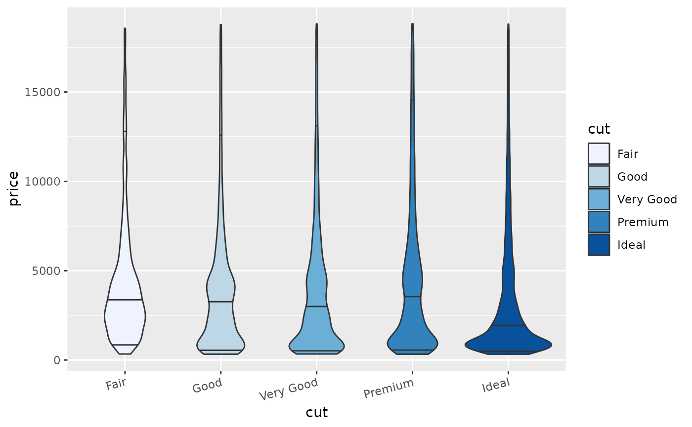

Using roogledocs
Rob Challen
roogledocs.RmdInitialising the library
Prior to doing any analysis we may have some form of template. This might be a document skeleton or report template. It can contain empty tables, placeholder images, and double-brace tags, all of which can be replaced by real content from R. To do this we initialise the Roogledocs library. There is a global flag to disable roogledocs in case you want to develop and test offline. Before pushing the result of the analysis to the google doc.
J = roogledocs::JavaApi$get(logLevel = "DEBUG") ## Initialising R Wrapper For Googledocs Java Library ## Version: 0.1.0 ## Generated: 2022-08-11T15:57:43.245575 ## Calculating classpath and updating dependencies, please be patient. ## Dependencies updated ## 2022-08-11 15:57:54,783 main DEBUG Apache Log4j Core 2.17.2 initializing configuration org.apache.logging.log4j.core.config.builder.impl.BuiltConfiguration@3febb011 ## 2022-08-11 15:57:54,801 main DEBUG PluginManager 'Core' found 127 plugins ## 2022-08-11 15:57:54,801 main DEBUG PluginManager 'Level' found 0 plugins ## 2022-08-11 15:57:54,813 main DEBUG PluginManager 'Lookup' found 16 plugins ## 2022-08-11 15:57:54,814 main DEBUG Building Plugin[name=AppenderRef, class=org.apache.logging.log4j.core.config.AppenderRef]. ## 2022-08-11 15:57:54,825 main DEBUG PluginManager 'TypeConverter' found 26 plugins ## 2022-08-11 15:57:54,831 main DEBUG createAppenderRef(ref="Console", level="null", Filter=null) ## 2022-08-11 15:57:54,832 main DEBUG Building Plugin[name=root, class=org.apache.logging.log4j.core.config.LoggerConfig$RootLogger]. ## 2022-08-11 15:57:54,839 main DEBUG LoggerConfig$RootLogger$Builder(additivity="null", level="DEBUG", levelAndRefs="null", includeLocation="null", ={Console}, ={}, Configuration(DefaultLogger), Filter=null) ## 2022-08-11 15:57:54,841 main DEBUG Building Plugin[name=loggers, class=org.apache.logging.log4j.core.config.LoggersPlugin]. ## 2022-08-11 15:57:54,841 main DEBUG createLoggers(={root}) ## 2022-08-11 15:57:54,841 main DEBUG Building Plugin[name=layout, class=org.apache.logging.log4j.core.layout.PatternLayout]. ## 2022-08-11 15:57:54,844 main DEBUG PatternLayout$Builder(pattern="%d %p %c [%t] %m%n", PatternSelector=null, Configuration(DefaultLogger), Replace=null, charset="null", alwaysWriteExceptions="null", disableAnsi="null", noConsoleNoAnsi="null", header="null", footer="null") ## 2022-08-11 15:57:54,845 main DEBUG PluginManager 'Converter' found 45 plugins ## 2022-08-11 15:57:54,870 main DEBUG Building Plugin[name=appender, class=org.apache.logging.log4j.core.appender.ConsoleAppender]. ## 2022-08-11 15:57:54,877 main DEBUG ConsoleAppender$Builder(target="SYSTEM_OUT", follow="null", direct="null", bufferedIo="null", bufferSize="null", immediateFlush="null", ignoreExceptions="null", PatternLayout(%d %p %c [%t] %m%n), name="Console", Configuration(DefaultLogger), Filter=null, ={}) ## 2022-08-11 15:57:54,879 main DEBUG Starting OutputStreamManager SYSTEM_OUT.false.false ## 2022-08-11 15:57:54,879 main DEBUG Building Plugin[name=appenders, class=org.apache.logging.log4j.core.config.AppendersPlugin]. ## 2022-08-11 15:57:54,880 main DEBUG createAppenders(={Console}) ## 2022-08-11 15:57:54,880 main DEBUG Configuration org.apache.logging.log4j.core.config.builder.impl.BuiltConfiguration@3febb011 initialized ## 2022-08-11 15:57:54,886 main DEBUG PluginManager 'Lookup' found 16 plugins ## 2022-08-11 15:57:54,887 main DEBUG PluginManager 'Lookup' found 16 plugins ## 2022-08-11 15:57:54,888 main DEBUG PluginManager 'Converter' found 45 plugins ## 2022-08-11 15:57:54,890 main DEBUG Starting OutputStreamManager SYSTEM_OUT.false.false-1 ## 2022-08-11 15:57:54,891 main DEBUG Starting LoggerContext[name=277c0f21, org.apache.logging.log4j.core.LoggerContext@543588e6] with configuration org.apache.logging.log4j.core.config.builder.impl.BuiltConfiguration@3febb011... ## 2022-08-11 15:57:54,891 main DEBUG Shutdown hook enabled. Registering a new one. ## 2022-08-11 15:57:54,897 main DEBUG Starting configuration org.apache.logging.log4j.core.config.builder.impl.BuiltConfiguration@3febb011 ## 2022-08-11 15:57:54,897 main DEBUG Started configuration org.apache.logging.log4j.core.config.builder.impl.BuiltConfiguration@3febb011 OK. ## 2022-08-11 15:57:54,898 main DEBUG Shutting down OutputStreamManager SYSTEM_OUT.false.false-1 ## 2022-08-11 15:57:54,898 main DEBUG OutputStream closed ## 2022-08-11 15:57:54,898 main DEBUG Shut down OutputStreamManager SYSTEM_OUT.false.false-1, all resources released: true ## 2022-08-11 15:57:54,898 main DEBUG Appender DefaultConsole-1 stopped with status true ## 2022-08-11 15:57:54,899 main DEBUG Stopped org.apache.logging.log4j.core.config.DefaultConfiguration@22ef9844 OK ## 2022-08-11 15:57:54,990 main DEBUG Registering MBean org.apache.logging.log4j2:type=277c0f21 ## 2022-08-11 15:57:54,992 main DEBUG Registering MBean org.apache.logging.log4j2:type=277c0f21,component=StatusLogger ## 2022-08-11 15:57:54,993 main DEBUG Registering MBean org.apache.logging.log4j2:type=277c0f21,component=ContextSelector ## 2022-08-11 15:57:54,994 main DEBUG Registering MBean org.apache.logging.log4j2:type=277c0f21,component=Loggers,name= ## 2022-08-11 15:57:54,995 main DEBUG Registering MBean org.apache.logging.log4j2:type=277c0f21,component=Appenders,name=Console ## 2022-08-11 15:57:54,996 main DEBUG org.apache.logging.log4j.core.util.SystemClock supports precise timestamps. ## 2022-08-11 15:57:54,996 main DEBUG LoggerContext[name=277c0f21, org.apache.logging.log4j.core.LoggerContext@543588e6] started OK with configuration org.apache.logging.log4j.core.config.builder.impl.BuiltConfiguration@3febb011. ## 2022-08-11 15:57:55,023 DEBUG roogledocs [main] Adding to classpath: ## 2022-08-11 15:57:55,024 DEBUG roogledocs [main] /home/terminological/Dropbox/Git/roogledocs/inst/java/roogledocs-0.1.0.jar ## 2022-08-11 15:57:55,025 DEBUG roogledocs [main] /home/terminological/.m2/repository/com/google/code/findbugs/jsr305/3.0.2/jsr305-3.0.2.jar ## 2022-08-11 15:57:55,025 DEBUG roogledocs [main] /home/terminological/.m2/repository/com/google/http-client/google-http-client/1.41.0/google-http-client-1.41.0.jar ## 2022-08-11 15:57:55,025 DEBUG roogledocs [main] /home/terminological/.m2/repository/com/google/http-client/google-http-client-gson/1.41.0/google-http-client-gson-1.41.0.jar ## 2022-08-11 15:57:55,025 DEBUG roogledocs [main] /home/terminological/.m2/repository/com/google/guava/guava/31.0.1-jre/guava-31.0.1-jre.jar ## 2022-08-11 15:57:55,025 DEBUG roogledocs [main] /home/terminological/.m2/repository/org/apache/commons/commons-lang3/3.9/commons-lang3-3.9.jar ## 2022-08-11 15:57:55,025 DEBUG roogledocs [main] /home/terminological/.m2/repository/com/google/guava/listenablefuture/9999.0-empty-to-avoid-conflict-with-guava/listenablefuture-9999.0-empty-to-avoid-conflict-with-guava.jar ## 2022-08-11 15:57:55,025 DEBUG roogledocs [main] /home/terminological/.m2/repository/org/apache/httpcomponents/httpclient/4.5.13/httpclient-4.5.13.jar ## 2022-08-11 15:57:55,025 DEBUG roogledocs [main] /home/terminological/.m2/repository/org/apache/logging/log4j/log4j-core/2.17.2/log4j-core-2.17.2.jar ## 2022-08-11 15:57:55,025 DEBUG roogledocs [main] /home/terminological/.m2/repository/com/google/apis/google-api-services-docs/v1-rev20210707-1.32.1/google-api-services-docs-v1-rev20210707-1.32.1.jar ## 2022-08-11 15:57:55,025 DEBUG roogledocs [main] /home/terminological/.m2/repository/io/opencensus/opencensus-contrib-http-util/0.28.0/opencensus-contrib-http-util-0.28.0.jar ## 2022-08-11 15:57:55,025 DEBUG roogledocs [main] /home/terminological/.m2/repository/com/google/api-client/google-api-client/1.33.0/google-api-client-1.33.0.jar ## 2022-08-11 15:57:55,025 DEBUG roogledocs [main] /home/terminological/.m2/repository/com/google/http-client/google-http-client-apache-v2/1.41.0/google-http-client-apache-v2-1.41.0.jar ## 2022-08-11 15:57:55,025 DEBUG roogledocs [main] /home/terminological/.m2/repository/org/slf4j/slf4j-api/1.7.36/slf4j-api-1.7.36.jar ## 2022-08-11 15:57:55,025 DEBUG roogledocs [main] /home/terminological/.m2/repository/io/grpc/grpc-context/1.27.2/grpc-context-1.27.2.jar ## 2022-08-11 15:57:55,025 DEBUG roogledocs [main] /home/terminological/.m2/repository/com/google/j2objc/j2objc-annotations/1.3/j2objc-annotations-1.3.jar ## 2022-08-11 15:57:55,025 DEBUG roogledocs [main] /home/terminological/.m2/repository/io/opencensus/opencensus-api/0.28.0/opencensus-api-0.28.0.jar ## 2022-08-11 15:57:55,025 DEBUG roogledocs [main] /home/terminological/.m2/repository/io/github/terminological/r6-generator-runtime/0.5.1/r6-generator-runtime-0.5.1.jar ## 2022-08-11 15:57:55,025 DEBUG roogledocs [main] /home/terminological/.m2/repository/com/google/code/gson/gson/2.8.9/gson-2.8.9.jar ## 2022-08-11 15:57:55,025 DEBUG roogledocs [main] /home/terminological/.m2/repository/com/google/apis/google-api-services-drive/v3-rev20211107-1.32.1/google-api-services-drive-v3-rev20211107-1.32.1.jar ## 2022-08-11 15:57:55,026 DEBUG roogledocs [main] /home/terminological/.m2/repository/com/google/guava/failureaccess/1.0.1/failureaccess-1.0.1.jar ## 2022-08-11 15:57:55,026 DEBUG roogledocs [main] /home/terminological/.m2/repository/com/google/errorprone/error_prone_annotations/2.7.1/error_prone_annotations-2.7.1.jar ## 2022-08-11 15:57:55,026 DEBUG roogledocs [main] /home/terminological/.m2/repository/org/checkerframework/checker-qual/3.12.0/checker-qual-3.12.0.jar ## 2022-08-11 15:57:55,026 DEBUG roogledocs [main] /home/terminological/.m2/repository/com/google/oauth-client/google-oauth-client/1.32.1/google-oauth-client-1.32.1.jar ## 2022-08-11 15:57:55,026 DEBUG roogledocs [main] /home/terminological/.m2/repository/com/google/oauth-client/google-oauth-client-java6/1.32.1/google-oauth-client-java6-1.32.1.jar ## 2022-08-11 15:57:55,026 DEBUG roogledocs [main] /home/terminological/.m2/repository/commons-logging/commons-logging/1.2/commons-logging-1.2.jar ## 2022-08-11 15:57:55,026 DEBUG roogledocs [main] /home/terminological/.m2/repository/org/apache/httpcomponents/httpcore/4.4.15/httpcore-4.4.15.jar ## 2022-08-11 15:57:55,026 DEBUG roogledocs [main] /home/terminological/.m2/repository/com/google/oauth-client/google-oauth-client-jetty/1.32.1/google-oauth-client-jetty-1.32.1.jar ## 2022-08-11 15:57:55,026 DEBUG roogledocs [main] /home/terminological/.m2/repository/commons-codec/commons-codec/1.11/commons-codec-1.11.jar ## 2022-08-11 15:57:55,026 DEBUG roogledocs [main] /home/terminological/.m2/repository/org/apache/logging/log4j/log4j-slf4j-impl/2.17.2/log4j-slf4j-impl-2.17.2.jar ## 2022-08-11 15:57:55,026 DEBUG roogledocs [main] /home/terminological/.m2/repository/org/apache/logging/log4j/log4j-api/2.17.2/log4j-api-2.17.2.jar ## 2022-08-11 15:57:55,026 INFO roogledocs [main] Initialised roogledocs ## 2022-08-11 15:57:55,026 DEBUG roogledocs [main] R package version: 0.1.0 ## 2022-08-11 15:57:55,026 DEBUG roogledocs [main] R package generated: 2022-08-11T15:57:43.245886 ## 2022-08-11 15:57:55,026 DEBUG roogledocs [main] Java library version: io.github.terminological:roogledocs:0.1.0 ## 2022-08-11 15:57:55,026 DEBUG roogledocs [main] Java library compiled: 2022-07-07T22:53:20 ## 2022-08-11 15:57:55,026 DEBUG roogledocs [main] Contact: rob.challen@bristol.ac.uk x = J$RoogleDocs$new() ## 2022-08-11 15:57:55,036 INFO org.github.terminological.roogledocs.RService [main] Initialising RoogleDocs. Local token directory: /home/terminological/.roogledocs-test
Most of the time you will be creating or updating a single document. For this vignettes sake it is useful to be able to delete previous versions. The posint of roogledocs though is actually to work with a continuously updated document and therefore deleting documents is usually not what you want to do. Likewise for this vignette it is useful to get a copy of the googledoc as a PDF from R. This may not be that useful in real life. The main function here though is the "findOfCloneTemplate" which lets you find a google doc by name, or clone a template document if you can't find it. There are also equivalent methods to find or create blank documents, or just find google docs by name or sharing URL if they already exist.
roogledocs::delete_document("roogledocs-demo",areYouSure = TRUE) ## 2022-08-11 15:57:56,457 INFO org.github.terminological.roogledocs.RService [main] Deleting file: roogledocs-demo doc = roogledocs::doc_from_template("roogledocs-demo","https://docs.google.com/document/d/1XnrBgBJFz7jEMYtw3o3YKbOuMdWvUkzIul4hb2B-SC4/edit?usp=sharing") ## 2022-08-11 15:58:00,968 INFO org.github.terminological.roogledocs.RService [main] Created new document with title: roogledocs-demo doc$saveAsPdf(here::here("docs/articles/example-template-doc.pdf"))
Running the chunk above should authenticate you and grab a publicly shared template I created, and make a copy of it in your google drive under the name "roogledocs-demo". The document template can be seen here, or as the original google doc.
Tabular data
Inserting tables in this document is done by index. There is already a blank table 1 in the document. At the moment we support only huxtable tables. The following chunk creates a sample huxtable from the diamonds data set, applies some formatting and replaces the content of table one in the template with this data. The formatting is preserved more or less. There is only support for basic text formatting, borders (black solid only at present), background colour, and alignment. The table will repect column widths as a relative measure and the command takes a overall table width parameter. Layout will then depend on the content. Custom row heights are not supported.
hux = diamonds %>% mutate(colorCat = ifelse(color <= "G", "D-G","G-J")) %>% group_by(cut,colorCat) %>% summarise( `Size (mean + sd)` = sprintf("%1.2f \u00B1 %1.2f",mean(carat),sd(carat)), `Cost (mean + sd)` = sprintf("%1.0f \u00B1 %1.0f",mean(price),sd(price)) ) %>% huxtable::as_hux() %>% huxtable::theme_article() %>% huxtable::merge_repeated_rows() ## `summarise()` has grouped output by 'cut'. You can override using the `.groups` ## argument. hux %>% roogledocs::as.long_format_table() %>% doc$updateTable(tableIndex = 1,tableWidthInches = 4) ## Adding missing grouping variables: `maxRow` ## Table 1 updated hux
| cut | colorCat | Size (mean + sd) | Cost (mean + sd) |
|---|---|---|---|
| Fair | D-G | 0.93 ± 0.43 | 3997 ± 3312 |
| G-J | 1.24 ± 0.58 | 4972 ± 3873 | |
| Good | D-G | 0.78 ± 0.39 | 3620 ± 3380 |
| G-J | 1.00 ± 0.54 | 4610 ± 4194 | |
| Very Good | D-G | 0.72 ± 0.39 | 3587 ± 3666 |
| G-J | 1.00 ± 0.54 | 4873 ± 4358 | |
| Premium | D-G | 0.79 ± 0.44 | 4060 ± 4044 |
| G-J | 1.11 ± 0.59 | 5633 ± 4732 | |
| Ideal | D-G | 0.63 ± 0.36 | 3151 ± 3562 |
| G-J | 0.88 ± 0.53 | 4233 ± 4273 |
Updating figures
A similar process for figures. We need to have the figure as a PNG image on the local computer as a result of for example a ggplot. Once a local PNG is available, it is temporarily uploaded to your google drive, added to the document and then temporary drive file deleted. If you want copies for journal submission that is up to you to manage locally. In this example we update figure 1:
g = ggplot(diamonds, aes(x=carat,y=price, colour=color))+geom_point() filename = tempfile(fileext = ".png") ggsave(filename, g, width=6, height=3) filename %>% doc$updateFigure(figureIndex = 1) ## 2022-08-11 15:58:07,141 INFO org.github.terminological.roogledocs.RService [main] Uploading: file57446a0bf078.png; with type: image/png ## Figure 1 updated ## 2022-08-11 15:58:13,036 INFO org.github.terminological.roogledocs.RService [main] Deleting file: file57446a0bf078.png g

Updating a second figure will happen in the same way. The dimensions of the image in the google doc should exactly match the dimensions of the PNG file saved from R. This means if you change the size of an image in R it will be changed in the document. Image dimensions are therefore important to decide on in R. If the figure or table had not already existed in the target google doc (e.g. because you started with a blank document) they would simply have been uploaded and added at the end of the document as a sequentially numbered image. If you rearrange the order figures in the google doc it is up to you to fix the indexes in your code. Captions are not handled here at all as it is assumed that the captions will be maintained in the google doc and not in R (see "Updating tagged text" section later).
g2 = ggplot(diamonds, aes(x=cut,y=price, fill=cut))+geom_violin(draw_quantiles = c(0.95,0.5,0.05))+scale_fill_brewer() filename = tempfile(fileext = ".png") ggsave(filename, g2, width=4, height=3) filename %>% doc$updateFigure(figureIndex = 2) ## 2022-08-11 15:58:16,066 INFO org.github.terminological.roogledocs.RService [main] Uploading: file5744709ea67c.png; with type: image/png ## Figure 2 updated ## 2022-08-11 15:58:21,128 INFO org.github.terminological.roogledocs.RService [main] Deleting file: file5744709ea67c.png g2

Updating tagged text
If you want to update small textual results - e.g. results in the abstract of a paper (similar to RMarkdown inline chunks) you can place a double-brace tag into the google doc and replace this with text generated in R. The result is held as a named range in the google doc so that further changes or updates in code will be propagated through. This named range however can be lost if a user copy and pastes the replaced tagged text. In this case the tags will have to be manually put back in. You can get a list of the tags present in a document like this:
doc$tagsDefined()
| tag | count |
|---|---|
| table-1-update-date | 1 |
| diamonds-mean-sd | 2 |
Here we have 2 tags. The tags can be then set to specific content like this:
format(Sys.Date(),"%d/%m/%Y") %>% doc$updateTaggedText(tagName = "table-1-update-date") ## 2022-08-11 15:58:23,641 INFO org.github.terminological.roogledocs.RDocument [main] Autotext replacing: {{table-1-update-date}} with 11/08/2022 ## 2022-08-11 15:58:24,057 DEBUG org.github.terminological.roogledocs.RequestBuilder [main] No requests made ## Text table-1-update-date updated sprintf("%1.1f \u00B1 %1.1f",mean(diamonds$price),sd(diamonds$price)) %>% doc$updateTaggedText(tagName = "diamonds-mean-sd") ## 2022-08-11 15:58:25,176 INFO org.github.terminological.roogledocs.RDocument [main] Autotext replacing: {{diamonds-mean-sd}} with 3932.8 ± 3989.4 ## 2022-08-11 15:58:25,583 DEBUG org.github.terminological.roogledocs.RequestBuilder [main] No requests made ## Text diamonds-mean-sd updated
If you want to do a lot of copy pasting, or the tags have become broken, you may need to revert all the tags in a document so you can easily see where the good tags are (or to identify if some tags have been lost by copy paste). This can be done with the doc$revertTags() function, which puts the double-brace tags back in the document removing the auto-text. It is possible to use this kind of approach to automatically add in captions for figures or tables. It is technically possible to substitute images for double-brace tags also. This is not as convenient in my view as simply updating by index but may be necessary in certain circumstances.
New Content
Appending new content is also possible either as a simple styled text string, with consistent formatting, or as a continuous block (or blocks) with different styles, as specified in a dataframe. At the moment this is only possible at the end of the document and is really designed if a document is being generated completely from scratch. A minimal subset of text formatting is supported although by using named styles to can do more. It is not actually that hard to support more styles.
doc$appendText("\nAdding new content\n","HEADING_3") content = tibble::tribble( ~label, ~link, ~fontName, ~fontFace, "Roogledocs", "https://terminological.github.io/roogledocs/r-library/docs/", "Courier New", "plain", " is also able to add text at the end of the document with complex formatting. ", NA, NA, "plain", "Supporting fonts and font face formatting such as ", NA, NA, "plain", "bold, ", NA, NA, "bold", "italic ", NA, NA, "italic", "and underlined", NA, NA, "underlined", " amongst other things.", NA, NA, "plain" ) content
| label | link | fontName | fontFace |
|---|---|---|---|
| Roogledocs | https://terminological.github.io/roogledocs/r-library/docs/ | Courier New | plain |
| is also able to add text at the end of the document with complex formatting. | plain | ||
| Supporting fonts and font face formatting such as | plain | ||
| bold, | bold | ||
| italic | italic | ||
| and underlined | underlined | ||
| amongst other things. | plain |
doc$appendFormattedParagraph(content)
It could be possible to combine writing new content and updating tagged text in the same script to programmatically generate replacement content. Likewise this could be used for captions of tables and figures when they are added. When you write new content you can write in double-brace tags and these can then be updated at a later stage for example.
Finally we can write out the new document to a PDF, mostly so we can see what we have done:
doc$saveAsPdf(here::here("docs/articles/example-after-update.pdf"))
After the analysis has run we have a new version of the google document which should look like this.
Limitations and further options
There are a lot of possible ways to extend this. The current implementation is a minimally viable product, really designed to support my own use.
- For example, additional formatting options such as text colour, or table padding is not implemented but would be relatively straightforward.
- It feels simple to extend the tables to handle flextables and possibly others.
- Currently there is no support for bulleted lists, which is fairly simple, but I didn't have a good use case.
- Absolutely positioned images are ignored completely. This is probably a good thing as it lets you have a logo within the document for example without messing up the dynamic images from R.
- Building a google docs based drop in for the
officerlibrary for MS word could be good if it means we can leverage that interface for other uses (e.g. knitr support). - A fairly complex development would be support for google slides, although a very simple tagged text and image substitution equivalent might be simple, in reality for this you are likely to want to do more complex operations.